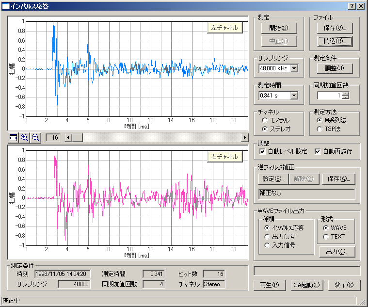

| 項目 | 説明 |
|---|---|
| 測定 | [開始]ボタンで測定を開始します。測定は自動的に終了しますが、[中止]ボタンで中断することもできます。 |
| ファイル |
[保存]ボタン：測定したデータを保存をします。 →6-2. インパルス応答/[保存]機能 [読込]ボタン：保存してあるデータを読み込みます。 →6-3. インパルス応答/[読込]機能 |
| サンプリング | A/Dコンバータのサンプリングレートを設定します。選択できるサンプリングレートはサウンドデバイスにより異なります。 |
| 測定条件 | [調整]ボタンをクリックすると、入出力レベル、マイク位置、測定時間などを調整するためのウィンドウが開きます。→6-4.インパルス応答/[調整]機能 |
| 測定時間 | インパルス応答の測定時間を選択します。必要とするインパルス応答時間（残響時間）の２倍以上を選択してください。 |
| 同期加算回数 | インパルス応答の同期加算回数を選択します。測定を指定した回数繰り返し、同期加算を行うことで、S/N比を向上させることができます。 |
| チャネル | ステレオ（2チャンネル）かモノラル（1チャンネル）かを選択します。 |
| 測定方法 | インパルス応答測定に、M系列信号を使用するか、TSP(Time-Stretched Pulse) を使用するかを選択します。M系列信号は、ホワイトノイズのように全周波数帯域のエネルギーを同時に含んでおり、その出力と入力の相互相関からインパルス応答を求めます。TSP信号は時間軸上にエネルギーを分散させたパルスで、測定データから分散したエネルギーを元に戻すことでインパルス応答を計算します。 |
| 自動レベル設定 | チェックを入れると、出力レベルが不適切な場合に、自動的にレベルを調整して測定を行います。 |
| 自動再試行 | チェックを入れると、測定を二度行って結果が一致しているか判断し、違いが大きい場合には一致するまで測定を自動的に再試行します。 |
| 逆フィルタ補正 | マイクやスピーカなどの測定系の不要なレスポンスを取り除くために使用します。[設定]ボタンは逆フィルタを設定し、[解除]ボタンは逆フィルタを解除します。[保存]ボタンは測定したインパルス応答から新たな逆フィルタを作成し、保存します。 →6-5.インパルス応答/逆フィルタ補正 |
| WAVE ファイル出力 | WAVEファイルやテキストファイルでデータを保存します。 |
| 再生 | 測定したインパルス応答音を再生します。 |
| SA起動 | SA(Sound Analyzer)を起動して測定データを分析します。 |
| 終了 | 「インパルス応答」ウィンドウを閉じます。 |
| 項目 | 説明 |
|---|---|
| 時間軸の表示範囲および位置を調整します。 | |
| 測定条件 | 測定時の諸条件（時刻，測定時間，ビット数，サンプリングレート，同期加算回数，チャネル）が表示されます。 |